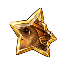
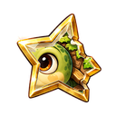
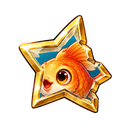
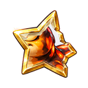
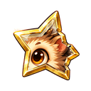
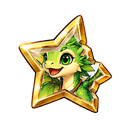
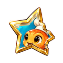
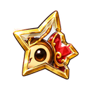

Gemi ve adalar
Gemiyi inşa et, adalara yelken aç, topla ve tamir et.
Tersane
- Gemini aşama aşama inşa et. Altın ve üretim malzemesi bağışla; azar azar verebilirsin.
- İzin verilen sayıda ada seç. Gemi hemen varır.
- Her adada: kendin OYNA (ganimet hemen) ya da OTOMATİĞE gönder (ganimet gemi dönünce).
- Bir adada otomatik, o adayı bir kez kendin geçince açılır.
- Her adanın sandığından sık sık kendi petinin parçaları çıkar.
- Son duraktan sonra gemi eve döner. Hasarlı gelir: yeniden sefere çıkmak için tamir et.
Adım adım
- YURT'u aç ve TERSANE tabelasına dokun.
- Gemiyi aşama aşama inşa et: bir altın ya da malzeme hücresinde VER'e ya da ELİMDEKİNİ VER'e dokun. Bağış geri alınamaz.
- Gemi hazır olunca SEFER'i aç, adalara dokunup rotaya ekle, sonra YELKEN AÇ. Gemi hemen varır.
- Her adada OYNA (kendin oyna, sandık hemen açılır) ya da OTOMATİK (ganimet gemi dönünce gelir) seç. Otomatik, adayı bir kez kendin temizleyince açılır.
- Son duraktan sonra gemi eve döner. Limana varınca HEPSİNİ TOPLA'ya dokun; sefer raporu her durağın ganimetini listeler.
- Gemi hasarlı döner. TAMİR'e dokun ve onarım malzemelerini inşa eder gibi teslim et.
- İskelenin yanındaki ADALAR tabelası adaları ve her adada ne olduğunu listeler.
- Sefer bileti, gemi hazır olmasa bile bir ek sefer verir. Adalar ekranından kullanılır.
Adalar
- Adalara gemiyle gidilir. Gemi Tersane'de inşa edilir ve tamir edilir.
- Her adayı kendin oyna ya da otomatiğe gönder. Bir adayı bir kez kendin temizleyince o ada için otomatik açılır.
- Her adanın kendi sandığı ve kendi Pet Kutusu vardır; o adanın pet parçaları daha sık çıkar.
- Ada bossları şansa bağlı olarak üretim aleti düşürebilir.
Gemiyi inşa etmek ve tamir
- Gemi aşama aşama Normal Özü ve altınla inşa edilir; katkı paneli verileni ve kalanı gösterir.
- Bir sefer için en fazla 3 ada seç. Son duraktan sonra geminin dönmesi birkaç saat sürer; ekran ne kadar süreceğini gösterir.
- Her dönüşte gövde hasar alır; gemi yeniden yelken açmadan önce tamir edilmelidir.
| Aşama | Gereken |
|---|---|
| 1. Omurga | 1.000 altın  Normal Özx50 Normal Özx50 |
| 2. Gövde | 2.000 altın Normal Özx100 |
| 3. Güverte | 3.000 altın Normal Özx150 |
| 4. Yelkenler | 4.000 altın Normal Özx200 |
| 5. Donanım | 5.000 altın Normal Özx250 |
| Tamir | 7.500 altın Normal Özx375 |
Ada listesi
- Her adanın sandığından sık sık o adanın petinin parçası çıkar; adanın Pet Kutusu da çıkabilir. Pet eşyaları pet çantana, gerisi çantana gider.
| Ada | Sandıktan sık çıkan |
|---|---|
| Yuva Adası |  Köstebek Parçası |
| Kaplumbağa Korusu |  Bitki Kaplumbağası Parçası |
| Mercan Sığlıkları |  Balık Parçası |
| Kor Tepesi |  Semender Parçası |
| Taş Dev Kayası | Golem Parçası |
| Diken Adacığı |  Kirpi Parçası |
| Peri Sisi Adası |  Peri Ejder Parçası |
| Kraken Derinliği |  Ahtapot Parçası |
| Demirkabuk Adası |  Armadillo Parçası Armadillo Parçası |
| Batık Tapınak |  Mücevher Böceği Parçası |
İlgili sayfalar
Petler · Yurt · Pet Parçaları